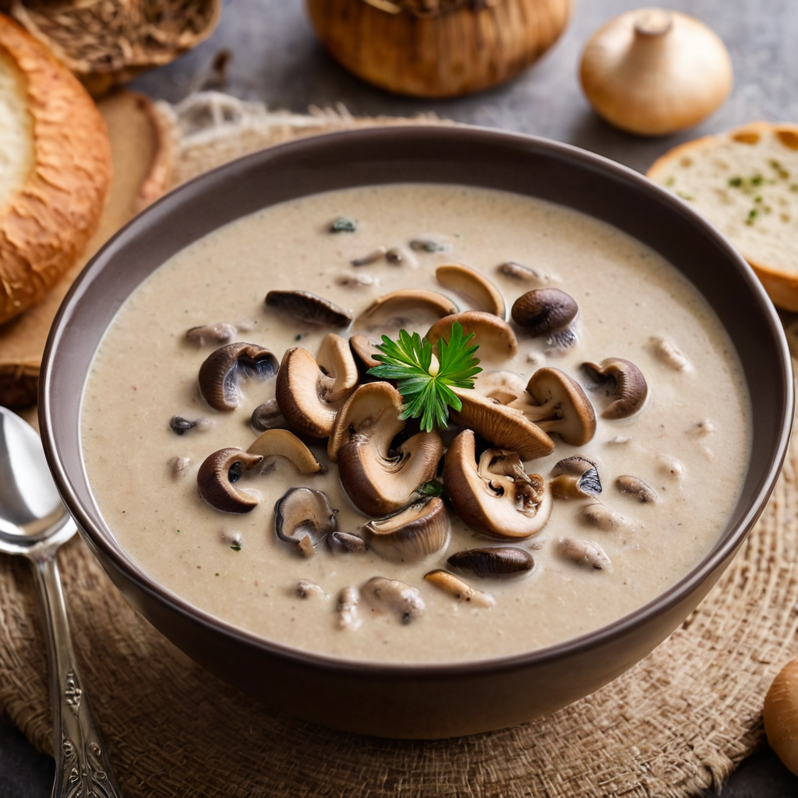

Hozzávalók:
- 400 g friss gomba (pl. csiperke vagy barna gomba), szeletekre vágva
- 2 ek vaj vagy olívaolaj
- 1 fej vöröshagyma, finomra vágva
- 2 gerezd fokhagyma, apróra vágva vagy zúzva
- 2 sárgarépa, felkarikázva
- 2 szálzeller, felkarikázva
- 4 csésze zöldség alaplé vagy víz
- 1 ek liszt (opcionális, a ragu sűrítéséhez)
- 1/2 csésze tejszín vagy tej (opcionális)
- Friss petrezselyem vagy snidling apróra vágva a tálaláshoz
- só
- bors
Elkészítés:
- Egy nagy lábasban melegítsük fel a vajat vagy olívaolajat közepes lángon.
- Adjuk hozzá a finomra vágott vöröshagymát, és pirítsuk meg, amíg üveges lesz, körülbelül 5 percig.
- Keverjük hozzá az apróra vágott fokhagymát, és pirítsuk további 1-2 percig, amíg illatos lesz.
- Adjuk hozzá a felkarikázott sárgarépát és zellert, és pirítsuk őket néhány percig, amíg kissé megpuhulnak.
- Tegyük hozzá a gombát, és főzzük további 5-7 percig, amíg a gomba megpuhul és kissé megpirul.
- Ha szeretnénk, megszórhatjuk a zöldségeket és a gombát liszttel, és piríthatjuk még néhány percig, hogy a liszt kissé megbarnuljon.
- Öntsük fel az alaplével vagy vízzel, és főzzük további 10-15 percig, hogy az ízek összeérjenek.
- Ha szeretnénk, öntsük hozzá a tejszínt vagy tejet a leveshez, hogy krémesebbé tegyük.
- Ízesítsük sóval és frissen őrölt fekete borssal ízlés szerint.
- Tálaláskor szórjuk meg friss petrezselyemmel vagy snidlinggel.